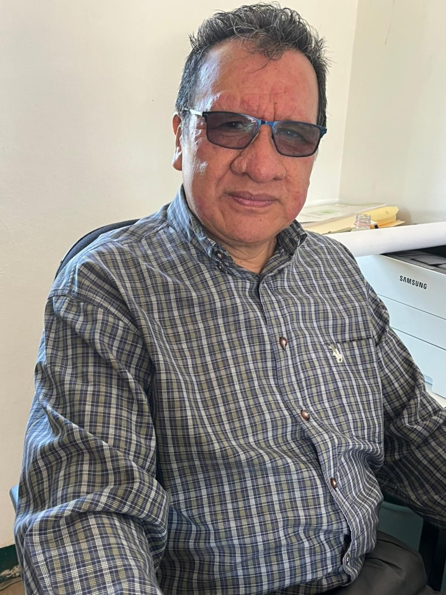
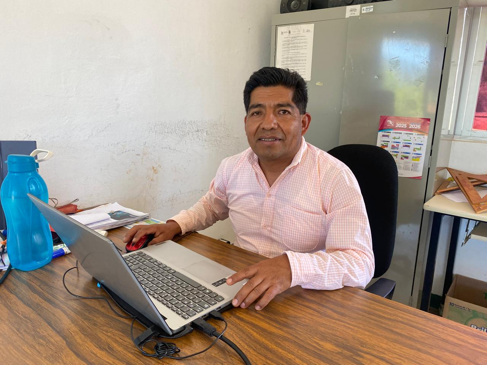
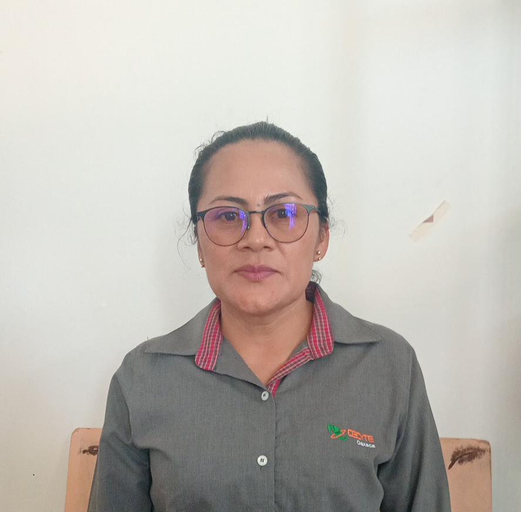
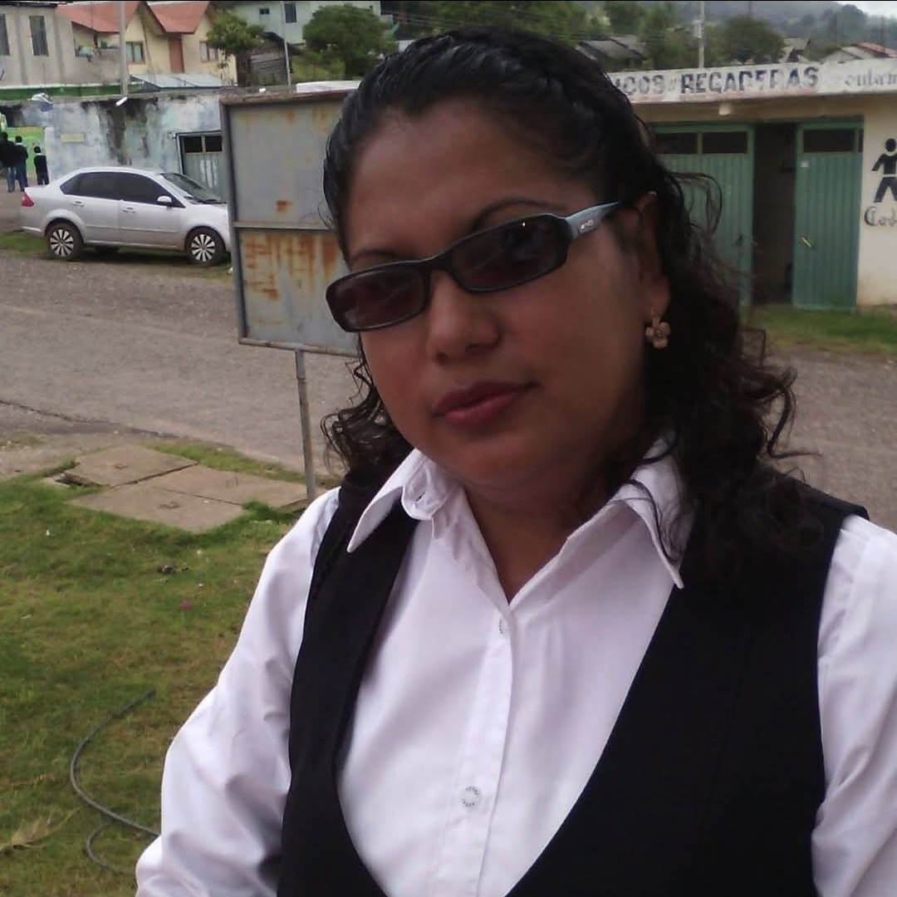
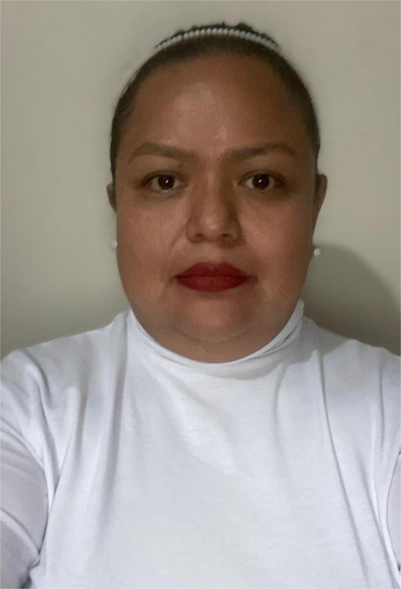

Responsable de la conducción estratégica del plantel. Ha impulsado el desarrollo académico, deportivo y cultural de los estudiantes, fortaleciendo la vinculación con la comunidad y autoridades locales.

Profesional con experiencia y liderazgo en equipos de alto rendimiento. Destaca por sus habilidades interpersonales, enfoque en resultados y capacidad para optimizar procesos administrativos y académicos.

Especialista en el desarrollo del pensamiento matemático con enfoque práctico utilizando GeoGebra, gráficas, prototipos y maquetas a escala.

Ciencias Naturales Experimentales y Tecnología.
Docente con experiencia en el área de Ciencias Naturales, impulsando el aprendizaje práctico y experimental.

Docente del Colegio de Estudios Científicos y Tecnológicos del Estado de Oaxaca, desde marzo del 2006.

Especialista en Ciencias Sociales y Humanidades, con formación en innovación pedagógica y habilidades digitales.

Especialista en el área de lenguaje y comunicación, fortalece la lectura, escritura y expresión oral.